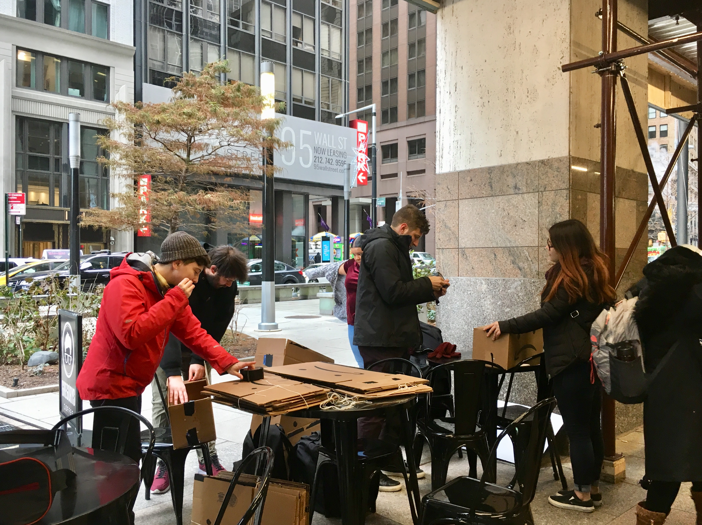

The City University of New York’s support of the new Amazon headquarters in Long Island City is the latest example of disinvestment in the system’s students, protesters said last Friday.
About 30 people gathered outside the Wall Street office of CUNY Board of Trustees Chairman William C. Thompson Jr., chanting “Colleges not corporations, you should fund our education.”
Students took Amazon delivery boxes and drew black eyes beneath the company’s signature arrow. Then they flipped them upside down, creating a frown.
“We’re here today to advocate for students because the board of trustees can’t do that,” said Sebastian Uchida, a City College student. “CUNY is plagued by crumbling buildings and student homelessness, and what do we get? Tax breaks for one
of the richest men in the world.”

Students took Amazon delivery boxes and drew black eyes beneath the company’s signature arrow. Then, they flipped them upside down, creating a frown.
The rally was organized by several CUNY activist groups including CUNY Rising, Brooklyn College’s chapter of Young Progressives of America and New York City Young Democratic Socialists.
Watch students preparing for the rally here
Protesters took issue with a New York Daily News op-ed penned in late November by Thompson and Vita C. Rabinowitz, CUNY’s interim chancellor. Forgotten in much of the Amazon discussion, the piece says, is “the great promise of opportunity,
guaranteed in the agreement, for thousands of New Yorkers of diverse backgrounds and means.”
“CUNY is positioned to be one of the key engines of that success, and to help the tech community diversify its ranks on a grand scale,” the chairman and chancellor wrote.
But protesters said there’s no such agreement in the memorandum of understanding, the 32-page document between the city, state and Amazon that lays out the initial agreement.
“We know the idea of CUNY students getting jobs there is an outrageous thing,” said Urchida. “There is no guarantee.”
The agreement says the city, state and Amazon will each contribute $5 million to tech training programs. That could include expansion of the NYC Tech Talent Pipeline, a partnership between the tech industry, city and some CUNY schools. But
the investment is scheduled to roll out over the next decade and doesn’t mention CUNY by name.
Students said they’ve been told for years that there isn’t enough money to fund investments in CUNY, despite tuition increases. The $1.5 billion incentive package promised by the city and state should instead be used to pay for some of the
most pressing needs of the education system, including infrastructure, vermin infestations and student and faculty poverty.